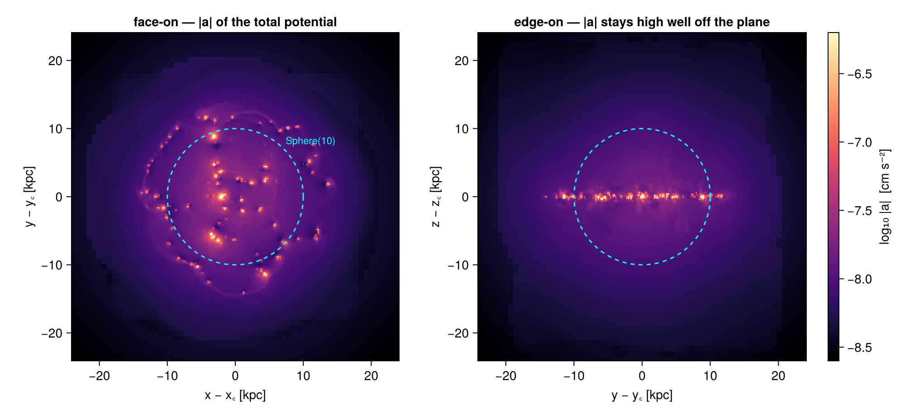
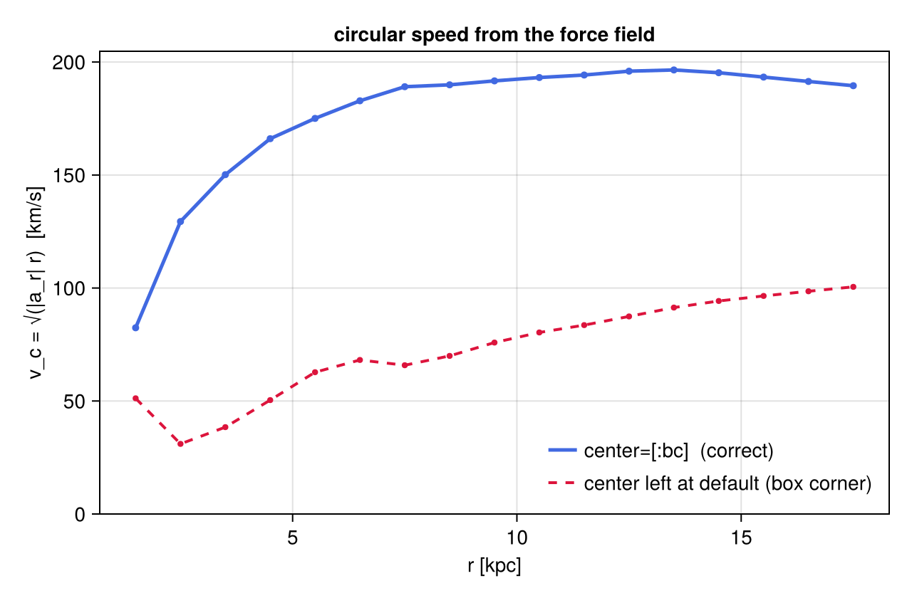
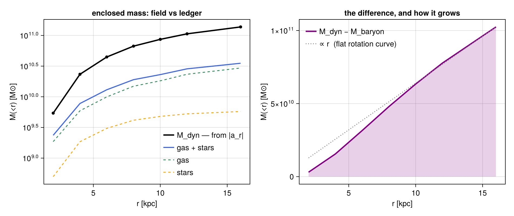
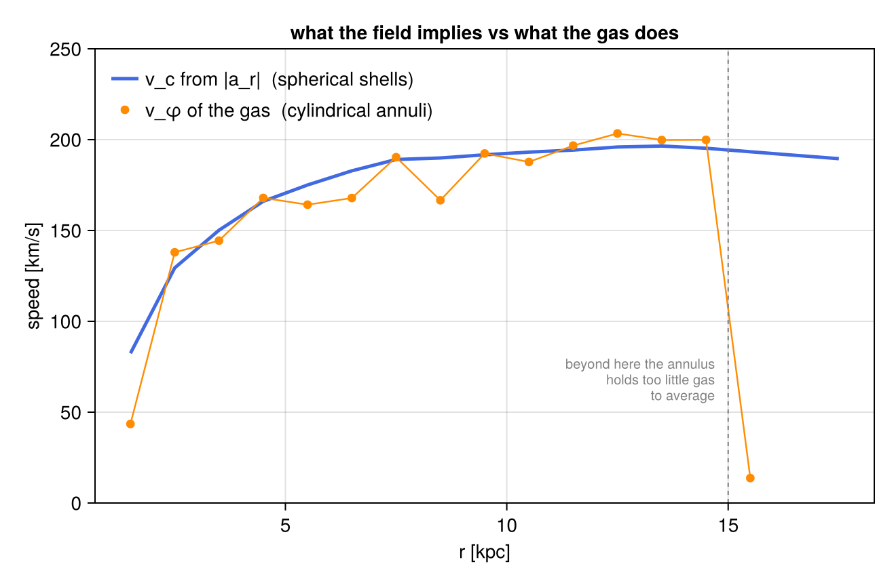
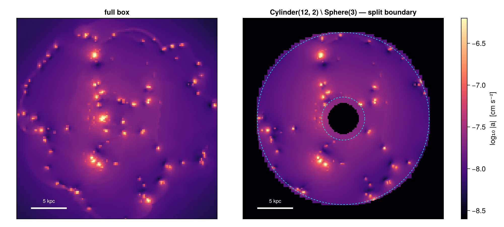

<!– GENERATED FILE. Do not edit this markdown. Source notebook: 03gravityGetSubregions.ipynb Regenerate with: MERADIR=<repo checkout> ./render_docs.sh Any edit here is lost the next time the docs are rendered. –>
3. Gravity: Sub-Regions of the Force Field
This page is also an executable Jupyter notebook — open / download 03_gravity_Get_Subregions.ipynb. The notebooks run end-to-end and double as part of Mera's test suite.
The hydro sub-region page built a mass budget: regions carve the grid, boundary cells are split by volume fraction, and the pieces add up. This page applies the same region machinery to the gravity data — and the interesting part is what changes when the cells carry no mass.
A gravity cell holds a field: the potential :epot and the acceleration components :ax, :ay, :az. There is nothing to sum. msum is not defined for a GravDataType, and asking getvar for :mass returns an error rather than a number. What a region gives you here is a volume, and with it the right weights for averaging a field over that volume.
That turns out to be enough to weigh the galaxy anyway — not by counting its mass, but by asking the force field how much mass it is responding to. The two answers disagree by a factor of about three and a half, and the disagreement is the point.
Reading convention. Longer code cells are cut in two by a banner line:
# ── figure code from here: panels, overlays, colorbars — no new Mera concepts ──Everything above the banner is the Mera part. Everything below it is Makie decoration — read it if you want the plot, skim it otherwise.
On this page
- the field, and what it cannot weigh
- one sphere, three volumes
- averaging a field over a region
- two different
centers — a trap worth naming - shells: the rotation curve the force field implies
- weighing the galaxy: Gauss's law vs the mass ledger
- a second opinion: the gas rotation
- composites and the
@regionblock - the cut you measure is the cut you see
- reference: the classic symbol API
- practical guidance
1. The Field, and What It Cannot Weigh
Three data types from one output, all loaded at the same resolution so the comparisons later are like for like: the gravity field, the gas, and the star particles. lmax=10 is a deliberate choice — the potential is smooth on scales far larger than the finest cells, so nothing in this page needs the deepest levels, and the page stays runnable on a laptop.
# Example-data root. Point this at your own simulation folder, or set the
# MERA_EXAMPLES environment variable; every path below is built from it.
MERA_EXAMPLES = get(ENV, "MERA_EXAMPLES", "/Volumes/FASTStorage/Simulations/Mera-Tests");
using Mera, CairoMakie
# Makie also exports geometric names (Sphere, Cylinder, ...) — state explicitly
# that we mean Mera's region types:
import Mera: Sphere, Cuboid, Cylinder, SphericalShell, CylindricalShell
CairoMakie.activate!()
path = "$MERA_EXAMPLES/RAMSES/manu_sim_sf_L14"
info = getinfo(400, path, verbose=false)
grav = getgravity(info, lmax=10, verbose=false, show_progress=false)
gas = gethydro(info, [:rho, :vx, :vy, :vz], lmax=10, smallr=1e-11,
verbose=false, show_progress=false)
stars = getparticles(info, verbose=false, show_progress=false)
kpc = info.scale.kpc # code length -> kpc
println("gravity cells : ", length(grav.data), " columns: ", keys(grav.data[1]))
println("gas cells : ", length(gas.data))
println("star particles : ", length(stars.data))
println("box : ", round(grav.boxlen * kpc, sigdigits=4),
" kpc, centre [:bc] at (24, 24, 24) kpc")*__ __ _______ ______ _______
| |_| | | _ | | _ |
| | ___| | || | |_| |
| | |___| |_||_| |
| | ___| __ | |
| ||_|| | |___| | | | _ |
|_| |_|_______|___| |_|__| |__|
Mera v1.8.0
gravity cells : 4879946 columns: (:level, :cx, :cy, :cz, :epot, :ax, :ay, :az)
gas cells : 4879946
star particles : 508939
box : 48.0 kpc, centre [:bc] at (24, 24, 24) kpc:cx, :cy, :cz, :level are the cell's address on the AMR lattice; :epot and :ax, :ay, :az are the field it carries. No density, no mass — so the two calls below are errors, not zeros:
msum(subregion(grav, Sphere(10.)), :Msol) # MethodError — no method for GravDataType
getvar(subregion(grav, Sphere(10.)), :mass) # "Variable :mass not found in gravity data"The second message suggests the way out: getvar accepts a hydro_data= keyword, so gravity and hydro quantities can be requested from one object when the two cover the same cells. On this page we keep the datasets separate and let the region be what they share — the same Sphere value applied to gas, to stars, and to the field.
First, what the field looks like. projection has a two-object form, projection(hydro, gravity, var): the hydro object supplies the weights, the gravity object the field. So a force map is a mass-weighted average of |a| along the line of sight.
# ─────────────────────────────────────────────────────────────────────
# FIGURE INFRASTRUCTURE for the whole page — skim freely on first read.
# The one Mera-relevant definition is `aproj` at the bottom: the projection
# defaults every force map reuses.
# ─────────────────────────────────────────────────────────────────────
const ALIM = (-8.6, -6.2) # log10 |a| [cm/s²] — one colour scale for every force map
function show_a!(ax, p; decorate=false)
m = p.maps[:a_magnitude]
xs = range(p.cextent[1]*kpc, p.cextent[2]*kpc; length=size(m, 1))
ys = range(p.cextent[3]*kpc, p.cextent[4]*kpc; length=size(m, 2))
heatmap!(ax, xs, ys, log10.(max.(m, 1e-12)); colormap=:magma, colorrange=ALIM)
ax.aspect = DataAspect()
ax.backgroundcolor = :black
decorate || hidedecorations!(ax)
return ax
end
a_bar!(pos) = Colorbar(pos; colormap=:magma, colorrange=ALIM,
label="log₁₀ |a| [cm s⁻²]")
function scalebar!(ax, x0, y0, len)
lines!(ax, [x0, x0 + len], [y0, y0]; color=:white, linewidth=3)
text!(ax, x0 + len/2, y0 + 0.6; text="$(round(Int, len)) kpc", color=:white,
fontsize=10, align=(:center, :bottom))
end
# mass-weighted projection of a GRAVITY field: hydro gives the weights,
# gravity gives the field
aproj(h, g; kwargs...) = projection(h, g, :a_magnitude, :cm_s2; direction=:z,
center=[:bc], pxsize=[0.2, :kpc],
verbose=false, show_progress=false, kwargs...)aproj (generic function with 1 method)pa_face = aproj(gas, grav) # face-on
pa_edge = aproj(gas, grav; direction=:x) # edge-on
# ── figure code from here: panels, overlays, colorbars — no new Mera concepts ──
fig = Figure(size=(1000, 460))
axf = Axis(fig[1, 1], title="face-on — |a| of the total potential",
xlabel="x − x꜀ [kpc]", ylabel="y − y꜀ [kpc]")
show_a!(axf, pa_face; decorate=true)
arc!(axf, Point2f(0, 0), 10., 0, 2π; color=:cyan, linewidth=1.5, linestyle=:dash)
text!(axf, 7.4, 7.4; text="Sphere(10)", color=:cyan, fontsize=11)
axe = Axis(fig[1, 2], title="edge-on — |a| stays high well off the plane",
xlabel="y − y꜀ [kpc]", ylabel="z − z꜀ [kpc]")
show_a!(axe, pa_edge; decorate=true)
arc!(axe, Point2f(0, 0), 10., 0, 2π; color=:cyan, linewidth=1.5, linestyle=:dash)
a_bar!(fig[1, 3])
fig
The gas lives in a thin disc; the acceleration it feels does not fall away nearly as quickly off the plane. Read that panel carefully rather than literally — it is a mass-weighted average along the line of sight, so it shows the field where there is gas to weight it, not the field everywhere. It is a hint, not a measurement. §6 turns the hint into a number.
2. One Sphere, Three Volumes
The hydro page measured one sphere three ways and got three masses. Here the same three boundary treatments give three volumes, and this time there is an exact answer to check against: a sphere of radius $R$ has volume $\tfrac{4}{3}\pi R^3$, no simulation required.
- whole cells — keep every cell the sphere touches (the classic symbol API with its default
cell=true): a strict superset, hence a strict upper bound; - centre test — keep cells whose centre lies inside (
split=false): a subset of the first, close to the truth but with no guaranteed sign; - split — keep boundary cells with a
:fractioncolumn recording how much of each lies inside;getvar(:volume)multiplies by it.
R = 10.0
sph = Sphere(R) # center=[:bc], range_unit=:kpc are the defaults
g_split = subregion(grav, sph, verbose=false) # split=true (default)
g_centre = subregion(grav, sph, split=false, verbose=false) # centre-inside test
g_whole = subregion(grav, :sphere; radius=R, center=[:bc], range_unit=:kpc,
verbose=false) # classic API, cell=true
V_exact = 4/3 * π * R^3
V = Dict{String,Float64}()
for (name, obj) in [("whole cells (classic API)", g_whole),
("centre test (split=false)", g_centre),
("split (split=true)", g_split)]
V[name] = sum(getvar(obj, :volume, :kpc3))
println(rpad(name, 28), rpad(length(obj.data), 10),
rpad(round(V[name], sigdigits=8), 14),
"dev = ", round(100*(V[name]/V_exact - 1), sigdigits=3), " %")
end
println(rpad("analytic 4/3 π R³", 28), rpad("", 10), round(V_exact, sigdigits=8))
# where does the whole-cell excess come from? look at the partially-filled cells
fr = Mera.select(g_split.data, :fraction)
cs = getvar(g_split, :cellsize, :kpc)
edge = 0 .< fr .< 1
println()
println("partial cells (0 < fraction < 1) : ", count(edge), " = ",
round(100*count(edge)/length(fr), digits=2), " % of the selected rows")
println("their mean size, per cell : ", round(sum(cs[edge])/count(edge), digits=3), " kpc")
println(" ... per unit volume : ",
round(sum(cs[edge].^4)/sum(cs[edge].^3), digits=3), " kpc ← the coarse ones dominate")
println("volume they would add if counted whole : ",
round(sum((1 .- fr[edge]) .* cs[edge].^3), sigdigits=4), " kpc³")
println("measured whole-cell excess : ",
round(V["whole cells (classic API)"] - V["split (split=true)"], sigdigits=4), " kpc³")whole cells (classic API) 2506705 4692.9682 dev = 12.0 %
centre test (split=false) 2488588 4196.3146 dev = 0.18 %
split (split=true) 2504682 4188.7277 dev = -0.00149 %
analytic 4/3 π R³ 4188.7902
partial cells (0 < fraction < 1) : 31813 = 1.27 % of the selected rows
their mean size, per cell : 0.155 kpc
... per unit volume : 0.644 kpc ← the coarse ones dominate
volume they would add if counted whole : 471.8 kpc³
measured whole-cell excess : 504.2 kpc³The split volume lands on the analytic sphere to about one part in $10^5$ — the residual is the sub-sampling of curved boundary cells (nsub, 8 per axis by default), not a systematic. The centre test happens to land close here, at two parts in a thousand, but carries no promise that it will next time.
The whole-cell number deserves a second look: twelve percent too much volume, contributed by cells that are barely one percent of the selection. The diagnostic underneath explains how so few cells carry so much — and it is a distinctly AMR effect. Count the partially-filled cells one by one and their mean size is 0.155 kpc; weight them by the volume they actually carry and it quadruples, to 0.644 kpc — essentially the coarsest level in the run. A sphere of radius 10 kpc has its boundary outside the refined disc, and one coarse cell holds some seventy times the volume of a cell two levels finer, so a minority of large cells at the rim outweighs all the small ones along the rest of the boundary. Counting those partial cells whole accounts for 472 of the 504 kpc³ excess; the remainder is the handful of extra cells the classic test keeps and the value-type test does not.
The lesson generalises: the error of a whole-cell cut is a property of the grid where the boundary happens to fall, not of the region's size. The same sphere centred somewhere fully refined would over-count far less.
Nothing about any of this is hydro-specific: it is the same :fraction column, and getvar(:volume) on gravity data is fraction-aware exactly as getvar(:mass) is on hydro data.
3. Averaging a Field Over a Region
With no mass to sum, the natural question about a region becomes what is the average field inside it — and on an AMR grid, that question has a wrong answer that is very easy to write:
sum(epot) / length(epot) # ← the mean over CELLS, not over VOLUMEA refined cell is not a smaller share of the region; it is a smaller volume. Averaging over cells silently reweights the region toward wherever the grid is refined — which, in a galaxy simulation, is exactly where the interesting physics distorted the answer. The volume-weighted mean is the honest one, and the :fraction column makes it correct at the boundary too.
ep = getvar(g_split, :epot, :km2_s2) # specific potential, in (km/s)²
vol = getvar(g_split, :volume) # fraction-aware weights
ep_c = getvar(g_centre, :epot, :km2_s2)
vol_c = getvar(g_centre, :volume)
println("mean over cells, split region : ", round(sum(ep)/length(ep), sigdigits=6), " (km/s)²")
println("mean over volume, centre test : ", round(sum(ep_c .* vol_c)/sum(vol_c), sigdigits=6), " (km/s)²")
println("mean over volume, split region : ", round(sum(ep .* vol)/sum(vol), sigdigits=6), " (km/s)²")
println()
println("cell mean vs volume mean : ",
round(100*((sum(ep)/length(ep)) / (sum(ep .* vol)/sum(vol)) - 1), sigdigits=3), " %")
println("centre test vs split, volume mean: ",
round(100*((sum(ep_c .* vol_c)/sum(vol_c)) / (sum(ep .* vol)/sum(vol)) - 1), sigdigits=3), " %")mean over cells, split region : -1907.2 (km/s)²
mean over volume, centre test : -1632.52 (km/s)²
mean over volume, split region : -1632.64 (km/s)²
cell mean vs volume mean : 16.8 %
centre test vs split, volume mean: -0.00738 %Two errors of very different size, and it is worth being clear about which one matters. Ignoring the volume weight moves the answer by about seventeen percent: the refined cells cluster in the deep centre of the potential, and counting them equally drags the mean down with them. Ignoring the boundary fractions moves it by parts in $10^5$: a shell of half-counted cells at $r = 10$ kpc is a small fraction of a sphere's volume, and the field varies slowly across it.
That ordering is the practical rule for field data: weight by volume always, split the boundary when the boundary is where the signal is — a thin shell, a narrow slab, a region only a few cells across.
4. Two Different centers — a Trap Worth Naming
Derived gravity quantities like :ar_sphere (the radial component of the acceleration) are not stored in the file; getvar computes them from :ax, :ay, :az and the cell position relative to an origin. That origin is getvar's own center keyword — and it is a different argument from the center that positioned the region.
Both default, and they default differently:
| keyword | belongs to | default |
|---|---|---|
center in Sphere(10.; center=[:bc]) | the region — where the shape sits | [:bc], the box centre |
center in getvar(obj, :ar_sphere, center=[:bc]) | the coordinate origin for derived quantities | [0., 0., 0.], the box corner |
Leaving the second one out does not raise an error — the corner is a perfectly well-defined origin, so the call succeeds and hands back a plausible number. Mera does now say something about it: the first time a frame-relative quantity is computed about the corner in a session it prints a one-off reminder naming that quantity. The cell below triggers it. Treat it as a nudge, not a guard: nothing is blocked, the default has not changed, and verbose(false) silences it along with every other Mera message.
w = getvar(g_split, :volume) # volume weights, used for every mean below
ar_corner = getvar(g_split, :ar_sphere, :cm_s2) # origin = box corner (default!)
ar_galaxy = getvar(g_split, :ar_sphere, :cm_s2, center=[:bc]) # origin = galaxy centre
println("⟨a_r⟩ about the box corner : ", round(sum(ar_corner .* w)/sum(w), sigdigits=4), " cm/s²")
println("⟨a_r⟩ about the box centre : ", round(sum(ar_galaxy .* w)/sum(w), sigdigits=4), " cm/s²")
println("ratio : ",
round((sum(ar_corner .* w)/sum(w)) / (sum(ar_galaxy .* w)/sum(w)), sigdigits=3))[Mera] Hint: getvar(:ar_sphere) has no `center` — it is measured about the box CORNER.
Pass center=[:bc] for the box centre, or center=[x, y, z] with center_unit.
This is a different argument from the `center` that places a region; give it
the same origin. Absolute positions :x/:y/:z are unaffected.
(shown once per session; verbose(false) silences Mera's messages)
⟨a_r⟩ about the box corner : -1.99e-9 cm/s²
⟨a_r⟩ about the box centre : -1.526e-8 cm/s²
ratio : 0.13Nearly an order of magnitude apart, and both numbers are real measurements — of different things. Whenever a quantity's name contains a geometry — :ar_sphere, :ar_cylinder, :aϕ_sphere, :r_cylinder, :vϕ_cylinder — pass center explicitly, and pass the same one you gave the region. Absolute positions (:x, :y, :z) are the exception: for those the box corner is the right default, because it returns the simulation's own coordinates.
5. Shells: the Rotation Curve the Force Field Implies
A SphericalShell is a region like any other, so a radial profile is a stack of them. For each shell we take the volume-weighted mean of $a_r$ and turn it into the speed a test particle would need to stay on a circular orbit there,
\[v_\mathrm{c}(r) = \sqrt{|a_r|\, r}\,,\]
which is a statement about the potential — it does not care whether the mass producing it is gas, stars, or something the output never wrote down.
The loop below computes both variants from the same shells: the correct one, and the one with getvar's center left at its default. The cost of one forgotten keyword is easier to see as a curve than as a number.
const KPC = 3.085677581e21 # cm
const GCGS = 6.67430e-8 # cm³ g⁻¹ s⁻²
const MSOL = 1.98892e33 # g
radii = collect(1.5:1.0:17.5)
vc_galaxy = Float64[]
vc_corner = Float64[]
for r in radii
sh = subregion(grav, SphericalShell(r - 0.5, r + 0.5), verbose=false)
ws = getvar(sh, :volume)
ag = sum(getvar(sh, :ar_sphere, :cm_s2, center=[:bc]) .* ws) / sum(ws)
ac = sum(getvar(sh, :ar_sphere, :cm_s2) .* ws) / sum(ws)
push!(vc_galaxy, sqrt(abs(ag) * r * KPC) / 1e5) # km/s
push!(vc_corner, sqrt(abs(ac) * r * KPC) / 1e5)
end
println("v_c at 8 kpc, origin = galaxy centre : ",
round(vc_galaxy[findfirst(==(7.5), radii)], digits=1), " km/s")
println("v_c at 8 kpc, origin = box corner : ",
round(vc_corner[findfirst(==(7.5), radii)], digits=1), " km/s")
# ── figure code from here: panels, overlays, colorbars — no new Mera concepts ──
fig = Figure(size=(640, 420))
ax = Axis(fig[1, 1], xlabel="r [kpc]", ylabel="v_c = √(|a_r| r) [km/s]",
title="circular speed from the force field")
lines!(ax, radii, vc_galaxy; color=:royalblue, linewidth=2.5, label="center=[:bc] (correct)")
scatter!(ax, radii, vc_galaxy; color=:royalblue, markersize=7)
lines!(ax, radii, vc_corner; color=:crimson, linewidth=2, linestyle=:dash,
label="center left at default (box corner)")
scatter!(ax, radii, vc_corner; color=:crimson, markersize=6)
axislegend(ax; position=:rb, framevisible=false)
ylims!(ax, 0, nothing)
figv_c at 8 kpc, origin = galaxy centre : 189.1 km/s
v_c at 8 kpc, origin = box corner : 65.8 km/s
The blue curve rises through the inner few kpc and then flattens near 190 km/s — a textbook galactic rotation curve, obtained without touching a single mass. The red curve is the same shells with the origin at the box corner: it is not noise, it is a perfectly well-defined measurement of the wrong thing, and nothing but the physics tells you so.
6. Weighing the Galaxy: Gauss's Law vs the Mass Ledger
Now the payoff, and the reason this page loads three datasets.
For a roughly spherical potential, the radial acceleration on a shell measures all the mass inside it — Gauss's law, in the form
\[M_\mathrm{dyn}(<r) \;=\; \frac{|a_r|\, r^2}{G}\,.\]
That is one number. The other comes from the hydro page's machinery: apply the same Sphere(r) to the gas and to the star particles and sum what is actually there. Same region value, three data types, two independent answers to "how much mass is inside this sphere".
rows = NamedTuple[]
for r in [2.0, 4.0, 6.0, 8.0, 10.0, 12.0, 16.0]
sph_r = Sphere(r) # ONE region value ...
sh = subregion(grav, SphericalShell(r - 0.25, r + 0.25), verbose=false)
ws = getvar(sh, :volume)
ar = sum(getvar(sh, :ar_sphere, :cm_s2, center=[:bc]) .* ws) / sum(ws)
Mdyn = abs(ar) * (r*KPC)^2 / GCGS / MSOL # ... asked of the field,
Mgas = msum(subregion(gas, sph_r, verbose=false), :Msol) # ... of the gas,
Mstar = msum(subregion(stars, sph_r, verbose=false), :Msol) # ... and of the stars
push!(rows, (r=r, Mdyn=Mdyn, Mgas=Mgas, Mstar=Mstar))
end
println(rpad("r [kpc]", 9), rpad("M_dyn", 12), rpad("M_gas", 12), rpad("M_star", 12),
rpad("M_baryon", 12), "M_dyn / M_baryon")
println("-"^73)
for t in rows
Mb = t.Mgas + t.Mstar
println(rpad(t.r, 9), rpad(round(t.Mdyn, sigdigits=4), 12),
rpad(round(t.Mgas, sigdigits=4), 12), rpad(round(t.Mstar, sigdigits=4), 12),
rpad(round(Mb, sigdigits=4), 12), round(t.Mdyn/Mb, digits=2))
endr [kpc] M_dyn M_gas M_star M_baryon M_dyn / M_baryon
-------------------------------------------------------------------------
2.0 5.411e9 1.858e9 4.984e8 2.356e9 2.3
4.0 2.328e10 5.918e9 1.853e9 7.77e9 3.0
6.0 4.453e10 9.955e9 3.054e9 1.301e10 3.42
8.0 6.694e10 1.486e10 4.148e9 1.901e10 3.52
10.0 8.636e10 1.821e10 4.785e9 2.3e10 3.76
12.0 1.063e11 2.329e10 5.27e9 2.856e10 3.72
16.0 1.377e11 2.946e10 5.754e9 3.521e10 3.91rr = [t.r for t in rows]
Mdyn = [t.Mdyn for t in rows]
Mbary = [t.Mgas + t.Mstar for t in rows]
# ── figure code from here: panels, overlays, colorbars — no new Mera concepts ──
fig = Figure(size=(950, 400))
ax1 = Axis(fig[1, 1], xlabel="r [kpc]", ylabel="M(<r) [M⊙]", yscale=log10,
title="enclosed mass: field vs ledger")
lines!(ax1, rr, Mdyn; color=:black, linewidth=2.5, label="M_dyn — from |a_r|")
scatter!(ax1, rr, Mdyn; color=:black, markersize=8)
lines!(ax1, rr, Mbary; color=:royalblue, linewidth=2, label="gas + stars")
lines!(ax1, rr, [t.Mgas for t in rows]; color=:seagreen, linewidth=1.5, linestyle=:dash, label="gas")
lines!(ax1, rr, [t.Mstar for t in rows]; color=:orange, linewidth=1.5, linestyle=:dash, label="stars")
axislegend(ax1; position=:rb, framevisible=false)
ax2 = Axis(fig[1, 2], xlabel="r [kpc]", ylabel="M(<r) [M⊙]",
title="the difference, and how it grows")
band!(ax2, rr, zeros(length(rr)), Mdyn .- Mbary; color=(:purple, 0.18))
lines!(ax2, rr, Mdyn .- Mbary; color=:purple, linewidth=2.5, label="M_dyn − M_baryon")
lines!(ax2, rr, (Mdyn[end]-Mbary[end]) .* rr ./ rr[end]; color=:grey, linewidth=1.5,
linestyle=:dot, label="∝ r (flat rotation curve)")
axislegend(ax2; position=:lt, framevisible=false)
fig
The field consistently reports more mass than the gas and stars in the same sphere contain — a factor 2.3 at 2 kpc, rising to nearly 4 by 16 kpc. Over the outer half of that range the gap grows very nearly linearly with radius, which is the signature of a halo whose rotation curve is flat.
And the shortfall is not something the region selection dropped. The entire particle population of this output — every particle in the box, not just those inside the sphere — weighs $5.8 \times 10^9\,M_\odot$, more than an order of magnitude less than the gap at 16 kpc. Whatever the field is responding to is not represented in this output as cells or as particles at all. That is a completely ordinary situation for an isolated-galaxy run, and it is exactly the kind of thing a mass budget should be able to detect rather than quietly absorb: the ledger of what you can see, the field of what is actually pulling, and a region language that lets you ask both the same question.
7. A Second Opinion: the Gas Rotation
One more cross-check, and one more region shape. If $v_\mathrm{c}$ from §5 is right, the gas — which sits in the midplane and moves in this potential — should be going round at about that speed. CylindricalShell(r_in, r_out, H) is the natural region for that: a thin annulus of the disc, half-height $H$.
Note that the two estimators share nothing except the geometry. One is a volume-weighted mean of the gravitational acceleration; the other a mass-weighted mean of the gas azimuthal velocity.
r_ann = collect(1.5:1.0:15.5)
vphi = Float64[]
ncells = Int[]
for r in r_ann
an = subregion(gas, CylindricalShell(r - 0.5, r + 0.5, 0.5), verbose=false)
m = getvar(an, :mass, :Msol) # fraction-aware
v = getvar(an, :vϕ_cylinder, :km_s, center=[:bc]) # ... and centred!
push!(vphi, sum(v .* m) / sum(m))
push!(ncells, length(an.data))
end
println("annulus at 7.5 kpc : v_φ(gas) = ", round(vphi[findfirst(==(7.5), r_ann)], digits=1),
" km/s vs v_c(field) = ", round(vc_galaxy[findfirst(==(7.5), radii)], digits=1), " km/s")
println("outermost annulus : ", ncells[end], " cells — the gas disc has ended, the mean is meaningless")
# ── figure code from here: panels, overlays, colorbars — no new Mera concepts ──
fig = Figure(size=(660, 430))
ax = Axis(fig[1, 1], xlabel="r [kpc]", ylabel="speed [km/s]",
title="what the field implies vs what the gas does")
lines!(ax, radii, vc_galaxy; color=:royalblue, linewidth=2.5, label="v_c from |a_r| (spherical shells)")
scatter!(ax, r_ann, vphi; color=:darkorange, markersize=9, label="v_φ of the gas (cylindrical annuli)")
lines!(ax, r_ann, vphi; color=:darkorange, linewidth=1.2)
vlines!(ax, [15.0]; color=:grey, linestyle=:dash, linewidth=1)
text!(ax, 14.7, 55; text="beyond here the annulus\nholds too little gas\nto average",
color=:grey, fontsize=10, align=(:right, :bottom))
axislegend(ax; position=:lt, framevisible=false)
ylims!(ax, 0, 250)
figannulus at 7.5 kpc : v_φ(gas) = 190.3 km/s vs v_c(field) = 189.1 km/s
outermost annulus : 13942 cells — the gas disc has ended, the mean is meaningless
Out to the edge of the gas disc the two curves track each other within about ten percent, and at 7.5 kpc they agree to better than one — good enough to trust the units, the centres, and the sign conventions on both sides, which is what a cross-check is for. The remaining scatter is physical: the gas is not on perfectly circular orbits, it has pressure support and non-axisymmetric structure, and a mass-weighted mean over a thick annulus is not the same average as a volume-weighted one over a spherical shell.
Then the outermost orange point collapses — not because the rotation stops, but because the annulus has run past the edge of the gas disc and there is almost nothing left to average. The blue curve, which measures the field rather than the material, carries straight on. Any profile built from regions should report its cell counts alongside its values; that last point is a number a region produced faithfully and a galaxy never had.
8. Composites, and the @region Block
The boolean algebra of the hydro page — ∩ ∪ \ !, or their ASCII forms intersect, union, setdiff — works unchanged on gravity data, and so does the @region block that lets a composite be written once with the shared keywords hoisted out.
Here: the disc slab with its nucleus removed, so the volume-weighted mean is about the disc outside the core rather than dominated by it.
ring = @region unit=:kpc center=[:bc] begin
disc = Cylinder(12, 2) # radius 12 kpc, half-height 2 kpc
core = Sphere(3)
disc \ core # set difference: the slab minus the nucleus
end
g_ring = subregion(grav, ring, verbose=false)
# the same thing written with explicit constructors and operators
ring_ops = setdiff(Cylinder(12., 2.; center=[:bc], range_unit=:kpc),
Sphere(3.; center=[:bc], range_unit=:kpc))
g_ops = subregion(grav, ring_ops, verbose=false)
V_ring = sum(getvar(g_ring, :volume, :kpc3))
# The nucleus is a sphere of radius 3 kpc but the slab is only ±2 kpc thick, so
# the difference removes just the sphere's middle band, ∫₋₂⁺² π(3² − z²) dz:
V_slab = π * 12^2 * 4 # radius² × full height
V_band = π * (2*9*2 - 2*2^3/3)
println("ring volume : ", round(V_ring, sigdigits=7), " kpc³")
println("analytic slab − band : ", round(V_slab - V_band, sigdigits=7), " kpc³ dev = ",
round(100*(V_ring/(V_slab - V_band) - 1), sigdigits=3), " %")
println("identical to the operator form : ",
V_ring == sum(getvar(g_ops, :volume, :kpc3)))
wr = getvar(g_ring, :volume)
println("⟨epot⟩ over the ring : ",
round(sum(getvar(g_ring, :epot, :km2_s2) .* wr)/sum(wr), sigdigits=6), " (km/s)²")ring volume : 1712.947 kpc³
analytic slab − band : 1713.215 kpc³ dev = -0.0157 %
identical to the operator form : true
⟨epot⟩ over the ring : -1600.32 (km/s)²@region is only shorthand: it walks the block and injects range_unit and center into every region constructor that does not already set them, then returns an ordinary region value. Explicit keywords always win, and the result is bit-identical to the operator form — as the check above confirms. The hydro page covers the algebra itself in detail.
The analytic check is worth reading closely, because it is the kind of thing set operations get right and intuition gets wrong. The nucleus is a sphere of radius 3 kpc; the slab is only ±2 kpc thick. The sphere therefore pokes out above and below, and disc \ core removes only the part they share — not the whole sphere's volume. The measured region agrees with the corresponding integral to a hundredth of a percent, which is a stronger statement than it looks: it says the fractions on the cylinder's curved wall, on the sphere's curved cap, and on the flat slab faces are all consistent with one another.
9. The Cut You Measure Is the Cut You See
The two-object projection accepts sub-region objects, so a field map can be clipped by exactly the region the numbers came from. Because the gas object carries the :fraction column, boundary pixels are weighted by how much of each cell is really inside — the rim of the map feathers over one cell rather than stepping along the grid.
gas_ring = subregion(gas, ring, verbose=false) # same region, both datasets
grav_ring = subregion(grav, ring, verbose=false)
p_ring = projection(gas_ring, grav_ring, :a_magnitude, :cm_s2; direction=:z,
center=[:bc], pxsize=[0.15, :kpc], xrange=[-14, 14], yrange=[-14, 14],
verbose=false, show_progress=false)
# ── figure code from here: panels, overlays, colorbars — no new Mera concepts ──
fig = Figure(size=(1000, 450))
ax1 = Axis(fig[1, 1], title="full box", xlabel="x − x꜀ [kpc]", ylabel="y − y꜀ [kpc]")
show_a!(ax1, pa_face)
limits!(ax1, -14, 14, -14, 14)
scalebar!(ax1, -12, -12.5, 5)
ax2 = Axis(fig[1, 2], title="Cylinder(12, 2) \\ Sphere(3) — split boundary",
xlabel="x − x꜀ [kpc]")
show_a!(ax2, p_ring)
limits!(ax2, -14, 14, -14, 14)
arc!(ax2, Point2f(0, 0), 12., 0, 2π; color=:cyan, linewidth=1, linestyle=:dash)
arc!(ax2, Point2f(0, 0), 3., 0, 2π; color=:cyan, linewidth=1, linestyle=:dash)
scalebar!(ax2, -12, -12.5, 5)
a_bar!(fig[1, 3])
fig
The hole is round, not staircased, and the outer rim ends where the cylinder does. For a figure at a chosen pixel size, refine_to=[0.15, :kpc] on the subregion call would push the feathering below the pixel scale — see §7 of the hydro page for what that costs and when it is worth it.
10. Reference: the Classic Symbol API
The original symbol-based interface works on gravity data unchanged, and remains the quickest way to take a rough cut. It is whole-cell by default (cell=true), centre-test with cell=false, and it has no fraction column — so getvar(:volume) after a classic cut counts whole cells, always.
| Value type | Classic call |
|---|---|
Cuboid(xrange=…, yrange=…, zrange=…) | subregion(grav, :cuboid; xrange=…, …) |
Sphere(R) | subregion(grav, :sphere; radius=R) |
Cylinder(R, H) | subregion(grav, :cylinder; radius=R, height=H) (z-axis only) |
SphericalShell(rin, rout) | shellregion(grav, :sphere; radius=[rin, rout]) |
CylindricalShell(rin, rout, H) | shellregion(grav, :cylinder; radius=[rin, rout], height=H) |
Shared keywords: center, range_unit, inverse=true for the complement, cell=true/false for the boundary test.
cub_c = subregion(grav, :cuboid; xrange=[-12, 12], yrange=[-12, 12], zrange=[-2, 2],
center=[:bc], range_unit=:kpc, verbose=false)
shl_c = shellregion(grav, :sphere; radius=[10., 20.], center=[:bc], range_unit=:kpc,
verbose=false)
println("classic cuboid : ", length(cub_c.data), " cells, V = ",
round(sum(getvar(cub_c, :volume, :kpc3)), sigdigits=6), " kpc³ (whole cells)")
println("classic shell : ", length(shl_c.data), " cells")
V_slab_split = sum(getvar(subregion(grav, Cuboid(xrange=[-12, 12], yrange=[-12, 12],
zrange=[-2, 2]), verbose=false),
:volume, :kpc3))
println()
println("value-type slab : ", round(V_slab_split, sigdigits=10), " kpc³ (split)")
println("analytic 24×24×4: ", 24*24*4, " kpc³ dev = ", V_slab_split/2304 - 1)classic cuboid : 3825112 cells, V = 2457.87 kpc³ (whole cells)
classic shell : 2197457 cells
value-type slab : 2304.0 kpc³ (split)
analytic 24×24×4: 2304 kpc³ dev = -1.9984014443252818e-15The axis-aligned Cuboid is the one shape whose fractions are computed analytically rather than sampled — a per-axis overlap product — so its split volume matches the exact slab to machine precision, while the whole-cell version carries a rim of boundary cells it never asked for.
11. Practical Guidance
Weight by volume. For gravity data there is no msum, and the mean over cells is not the mean over the region. getvar(obj, :volume) is the weight you want, and it is fraction-aware on a split region.
Pass center twice. Once to the region, to place it; once to getvar, for any quantity whose name contains a geometry. They are different arguments with different defaults, and getting the second one wrong produces a plausible number rather than an error (§4) — Mera will remind you once per quantity, but the reminder cannot know which origin you meant.
Split when the boundary is the signal. For a big sphere the fractions moved the mean potential by parts in $10^5$ (§3); for a thin shell, a narrow slab, or a region a few cells across, they are the whole story. When in doubt, measure both — it is one extra line.
Let the region be what the datasets share. Gravity, hydro, and particles are separate objects with separate columns, but one Sphere(r) value applies to all three. That is what made §6 a comparison rather than an apples-to-oranges table.
Resolution. The potential is smooth; lmax well below levelmax is usually plenty for field work and costs far less memory than the hydro side needs. Load the gravity data at the resolution your question has, not the one the simulation was run at.
Summary
- Gravity cells carry a field, not mass:
msumandgetvar(:mass)do not apply, and a region's payload is its volume. Everything else about regions — value types,:fractionsplitting,∩ ∪ \ !,@region, tilted axes,inverse— behaves exactly as on the hydro side. - Split volumes match analytic volumes to the sub-sampling limit; whole-cell cuts over-count and centre tests have no guaranteed sign (§2).
- Average fields by volume, never by cell count (§3), and give
getvarthe samecenteryou gave the region (§4) — both mistakes return numbers rather than errors, though the second one now announces itself once per quantity. - Shells of regions make radial profiles: the volume-weighted $a_r$ gives a rotation curve that flattens near 190 km/s (§5) and, through Gauss's law, an enclosed mass three to four times the gas and stars found in the same spheres (§6) — a dark component the output never wrote down, detected by asking one region two independent questions.
- The gas's own rotation agrees with the field to about ten percent inside the disc (§7), which is how you know the centres and units were right.
Continue with:
- Hydro sub-regions — the full treatment of region algebra, exact splitting, and mass budgets.
- The sibling pages for particles and clumps.
- Masking & Filtering — select by value instead of by place, and combine the two.